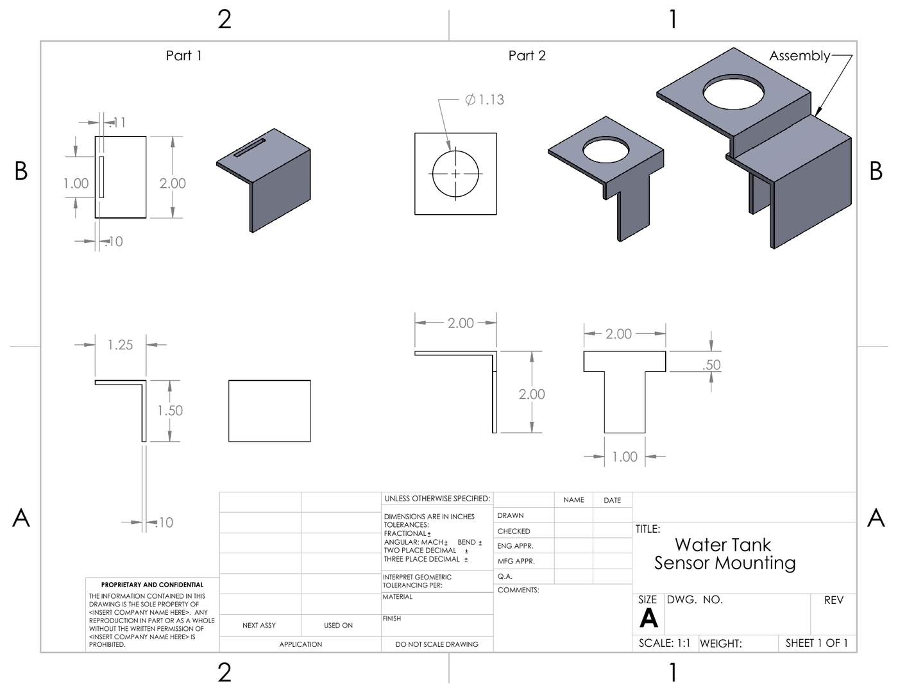
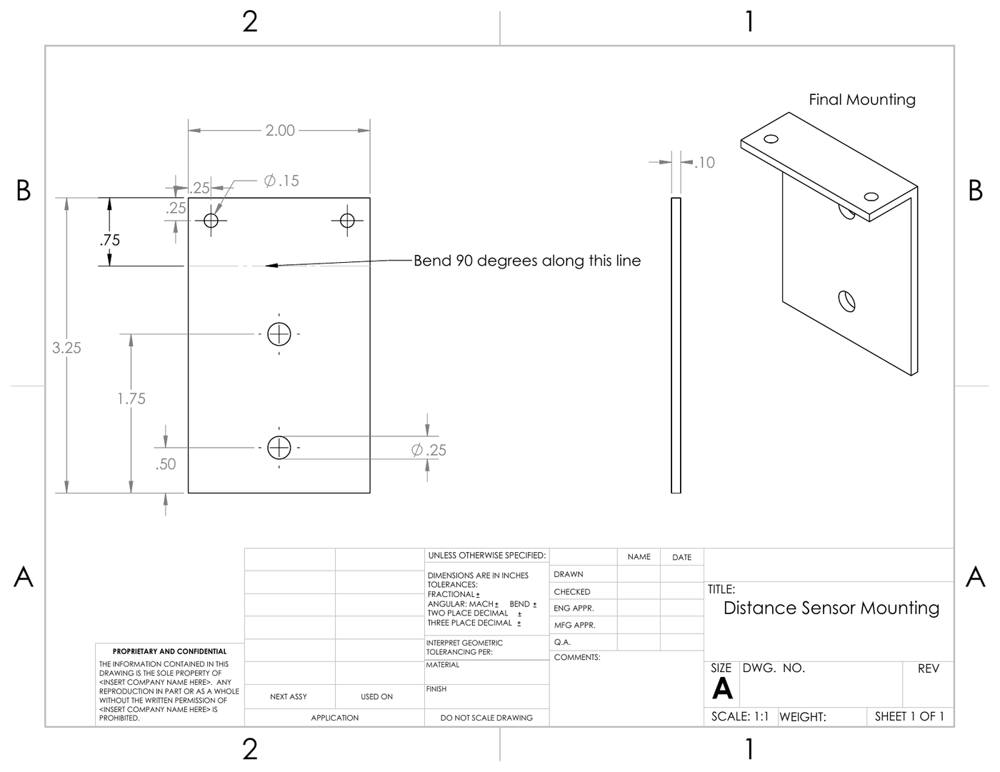
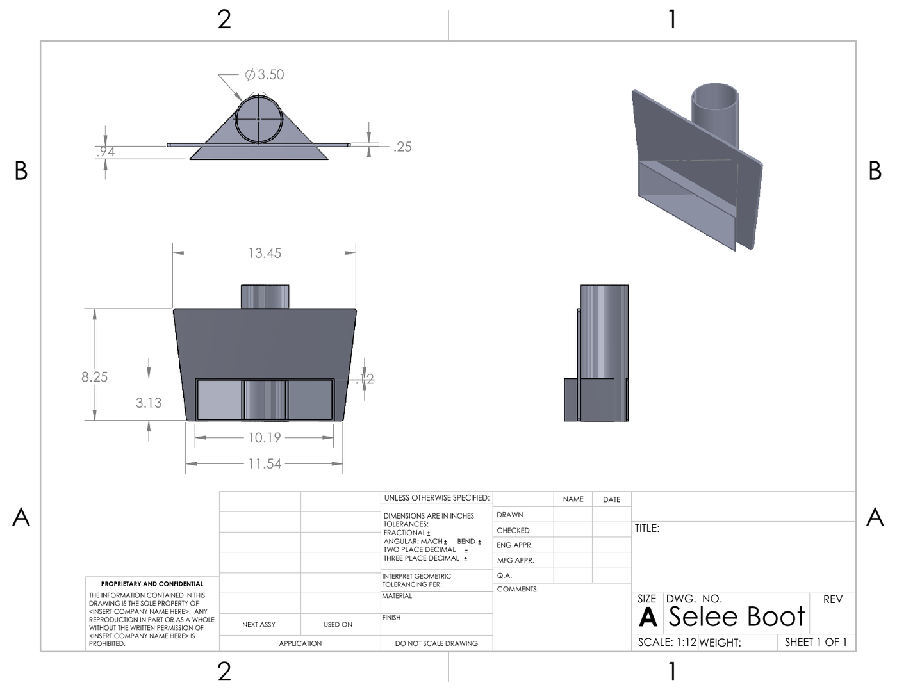
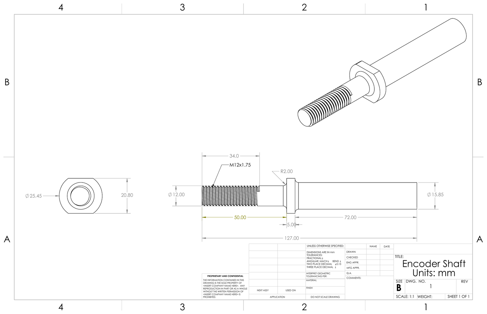
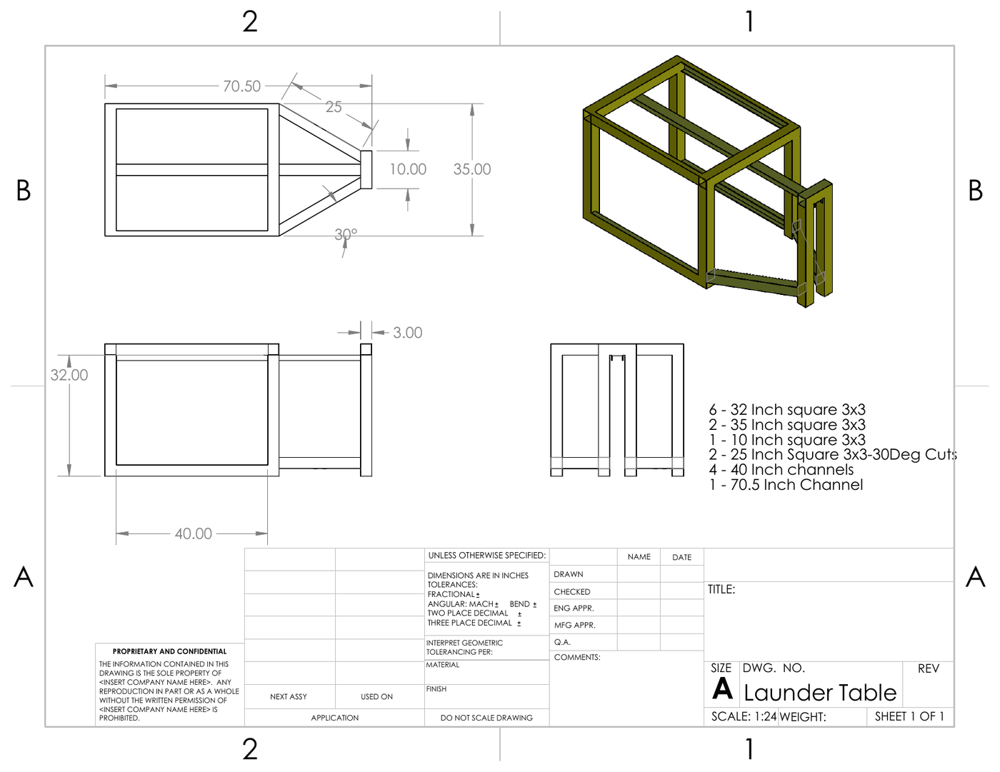

technical-engineering-projects / cad-design
CAD / Design Projects
Smaller design work, production-support fixtures, sensor mounts, drawings, and prototype parts.
Golden Aluminum design drawings

Water Tank Sensor Mounting
Mounting bracket for a level sensor on a water-cooling tank.
Open PDF drawing
Distance Sensor Mounting
Bent sensor mount for caster graphing and distance measurement.
Open PDF drawing
Selee Bowl Heater / Boot
Custom fixture for heating a bowl that aluminum flows through.
Open PDF drawing

Launder Table
Steel table for temporary safe storage of a removable aluminum-path section.
Open PDF drawing